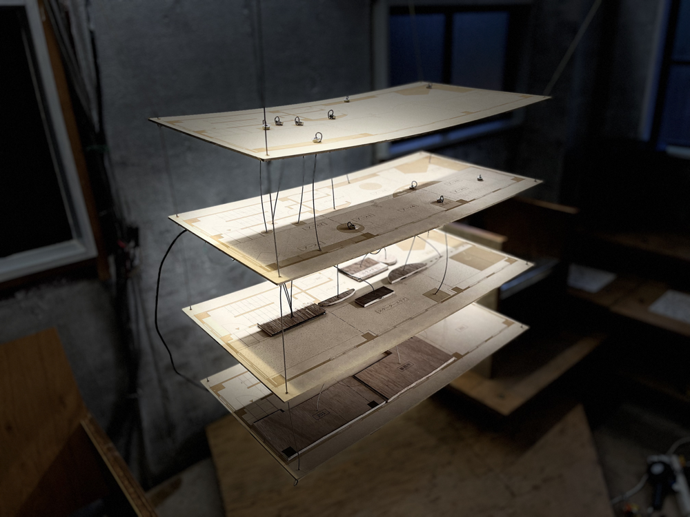
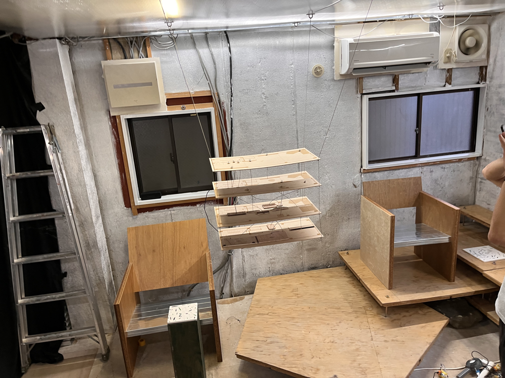
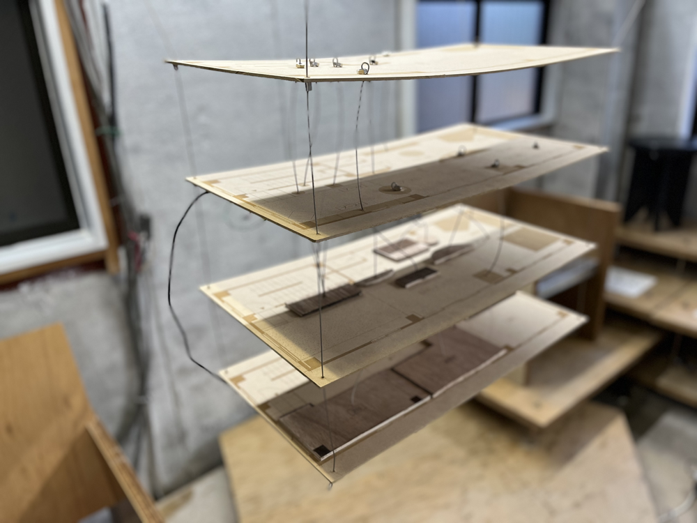

Conecting Past Spase
Technology
- esp32
- M5Stack
- M5stackC
- BLE Communication
- Touch Sensor
- Solenoid
Conecting Past Spase is an installation about how materials circulate through space while changing their form.
The work was inspired by FILTER gallery in Koto City, where previous exhibition materials are inherited by later exhibitions under the theme of upcycling. Doors become desks, floors become shelves, and elements of the space continue to circulate into new contexts.
I became interested in the experience of this material circulation and created Connecting Past Space. Floor plans from past exhibitions are layered, and the positions of objects on each layer are connected with stainless steel wires.
When visitors touch a wire, solenoids installed in the current space are struck, communicating the present location of those objects through sound.
By connecting past layouts and current objects, the work makes the memory and transformation of the exhibition space perceivable.


